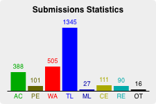
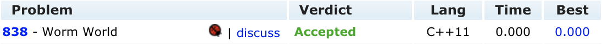

Description
給定一張n*n的圖，每個格子上面都有一個數字。
求在不碰到重複數字的情況下，最遠可以走多遠（只能上下左右移動）？
Input Format
輸入的第一列有一個整數代表以下有多少組測試資料。
每組測試資料的第一列，有一個整數$N(0 < N \le 12)$，代表這方陣的邊長大小。
接下來有$N$列，每列有$N$個整數（均介於 0 到 1000 之間）代表方陣中的數字。
第一列與第一組測試資料以及各組測試資料間均有一空白列
Output Format
對於每一筆測資請輸出一列，輸出最遠距離為多少。
Sample Input
1
3
1 2 1
2 3 4
3 2 1
Sample Output
4
UVa - 838
Solution
從uHunt上面看到這題的解題統計，可以發現TLE占非常多數。

所以這題的難度就是在於，如何降低程式執行時間？
首先先分析一下這題的做法，很明顯的可以看出可以用DFS來解。
對於每一層遞迴，朝上下左右四個方向去做遞迴，若遇到重複出現的數字就跳出。
然後我們可以再做一下優化：
假設此圖出現$k$個不同的數字，則最長路徑距離應為$k$，所以如果$遞迴深度 \ge k$，則可以$return$。
但是就算做了上述的優化，還是會TLE。結果後來我發現，dfs的順序很重要，「上左下右」跟「上下左右」等其他順序執行出來的時間差很多，到目前為止我還是不能證明出來為何會這樣，但是只要照著「上左下右」的順序去寫就可以輕鬆拿到AC了！
程式執行結果如下圖： 
網路上有人這題使用A*+Heap的作法，但是程式非常冗長且複雜，而且執行時間比我寫的還久一點，所以這裡就不說明了。
Code
/*************************************************************************
> File Name: 00838 - Worm World.cpp
> Author: Samuel
> Mail: enminghuang21119@gmail.com
> Created Time: Tue Oct 2 17:06:29 2018
*************************************************************************/
#include <bits/stdc++.h>
using namespace std;
int in[12][12];
int d[2][4] = {{-1, 0, 1, 0}, {0, -1, 0, 1}}; //up left down right
bool visit[1001];
int ans, cnt, n, t, c, ni, nj, steps;
void dfs(int i, int j) {
if (ans == cnt)
return;
visit[in[i][j]] = 0;
for (int k = 0; k < 4; k++) {
ni = i + d[0][k];
nj = j + d[1][k];
if (nj < 0 || ni < 0 || nj == n || ni == n)
continue;
if (!visit[in[ni][nj]])
continue;
steps++;
dfs(ni, nj);
steps--;
}
ans = max(ans, steps);
visit[in[i][j]] = 1;
}
int main() {
ios::sync_with_stdio(0);
cin.tie(0);
for (cin >> c; t < c; ) {
cin >> n;
cnt = ans = 0;
memset(visit, 0, sizeof(visit));
for (int i = 0; i < n; i++)
for (int j = 0; j < n; j++) {
cin >> in[i][j];
if (!visit[in[i][j]])
visit[in[i][j]] = 1, cnt++;
};
for (int i = 0; i < n; i++)
for (int j = 0; j < n; j++) {
steps = 1;
dfs(i, j);
}
cout << ans << '\n';
if (++t < c)
cout << '\n';
}
return 0;
}